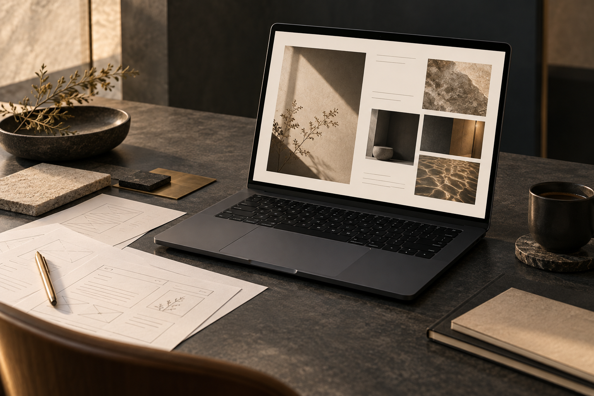
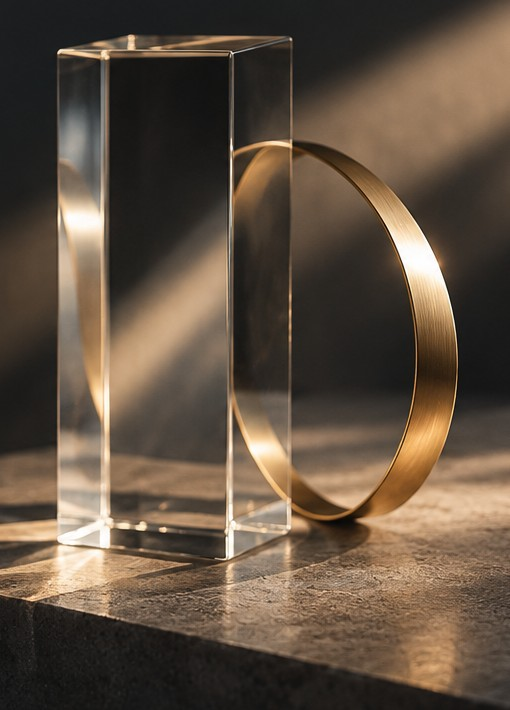
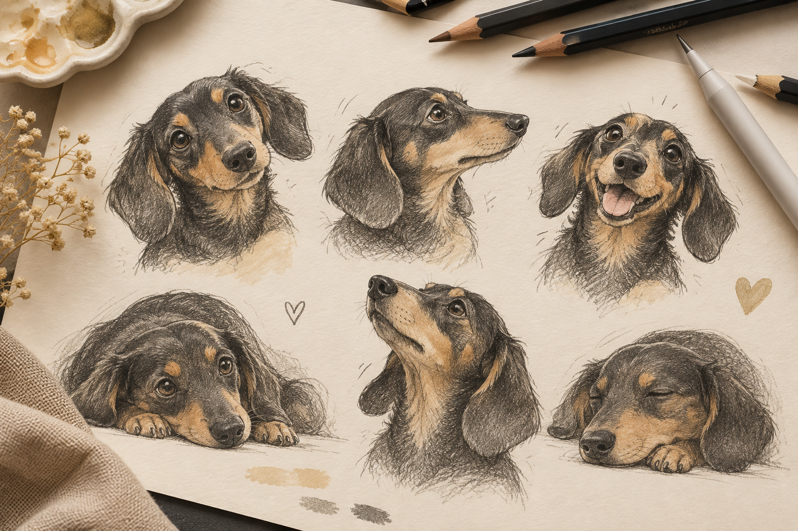
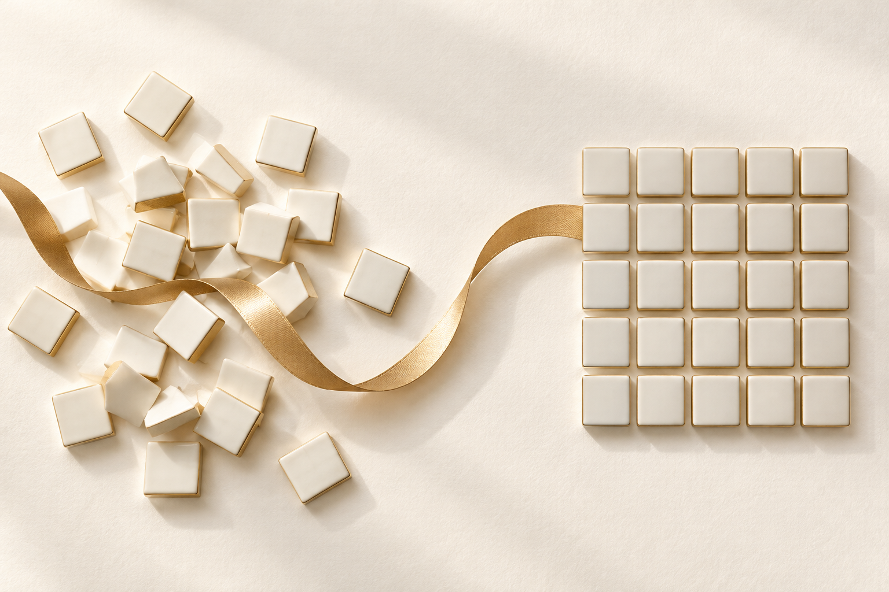
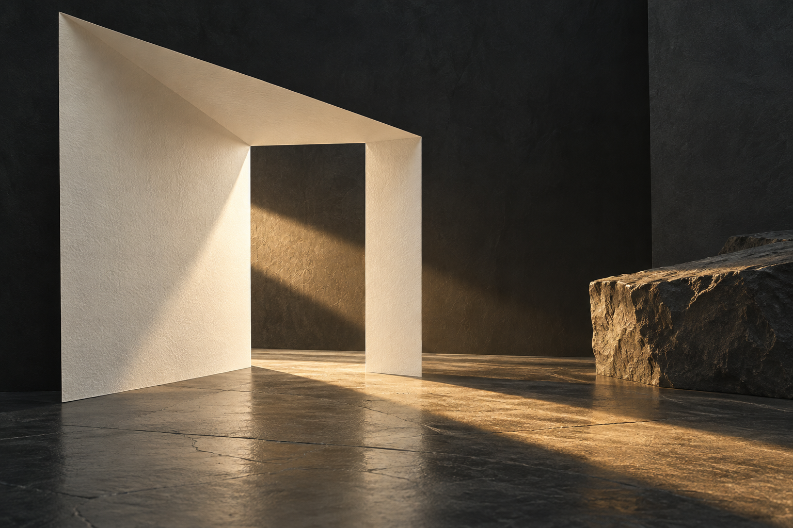

01お店や事業の魅力を、
WEB & LANDING PAGE
お店や事業の魅力を、
分かりやすく。
ホームページやLPを、伝える内容の整理から制作します。スマートフォンでの見やすさと、次の行動につながる流れを大切にします。
Web制作のご相談について

Ideas
into form.
A ROOM FOR IDEAS
LUME-A Studioは、自由な発想を
かたちにする制作アトリエです。
見た目の心地よさと、使う人にとっての分かりやすさ。
その両方を大切に、デザインから小さな自動化まで、
アイデアを使えるかたちへ整えます。
WHAT I CREATE
伝えること。親しみを生むこと。
毎日の手間を、少し減らすこと。

WEB & LANDING PAGE
ホームページやLPを、伝える内容の整理から制作します。スマートフォンでの見やすさと、次の行動につながる流れを大切にします。
Web制作のご相談について
ILLUSTRATION & LINE
LINEスタンプ、イラスト、キャラクターなど、日常のコミュニケーションに彩りを添える制作。用途に合わせて、表情や言葉の温度感を整えます。
イラスト制作のご相談について
PYTHON & EXCEL VBA
会社で培ったPython・Excel VBAのツール制作経験を生かし、データ整理や定型処理など、日々の業務を支える仕組みを考えます。
対応範囲は、利用環境と作業内容を確認してご相談します。
ツール制作のご相談について掲載画像は制作領域を伝えるためのイメージビジュアルです。
HOW I WORK
まだ輪郭のないアイデアも、
ひとつずつ、かたちに。
何を伝えたいか。どこに手間がかかっているか。まだまとまらないアイデアも、会話から整理します。
目的に合わせて構成・表現・動きを設計し、確認できるかたちに。イメージを共有しながら進めます。
見る人、使う人の目線で確かめる。分かりやすさや使い心地を見直し、細部を整えます。

ABOUT THE STUDIO
LUMEは光やひらめき。
AはAI、Art、そしてRoom A。
名前に込めたのは、新しい可能性が生まれる一室のイメージです。技術と感性を行き来しながら、アイデアを次の一歩へつなぎます。
LET’S CREATE SOMETHING
ホームページをつくりたい。
イラストで想いを伝えたい。
いつもの作業を、少し楽にしたい。
つくりたいものと、いま困っていることを。
まずは、そこから。
受付を開始しましたら、このページでご案内します。